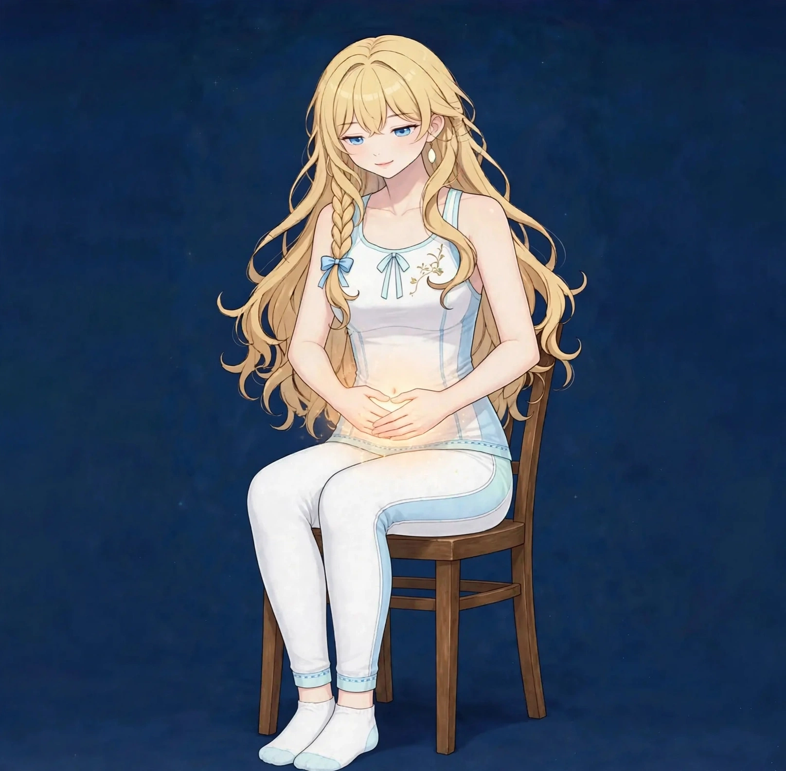
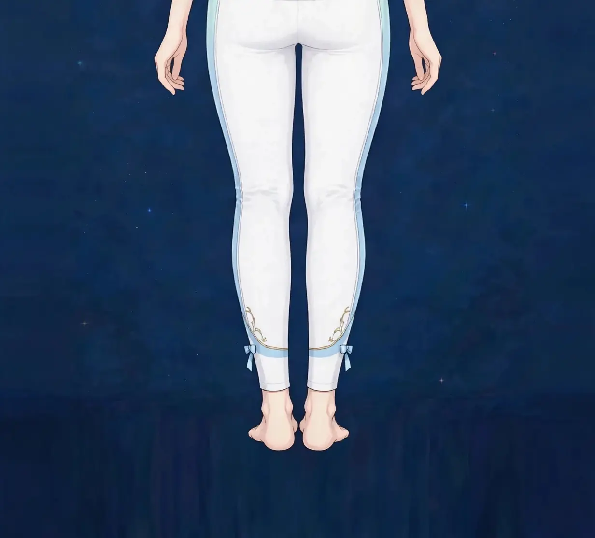

梅田で肉割れ・妊娠線ケア｜美容整体で肌の見た目にオイルケアでアプローチ｜ステラポラリス 梅田・女性専用美容・見た目

お腹や太もも、お尻に残る、線状の跡。肉割れや妊娠線は、多くの女性が持つ自然な変化の跡ですが、見た目が気になるという相談は少なくありません。オイルケアでできるアプローチを、正直にお伝えします。
肉割れ・妊娠線とはどんなものか
肉割れは、皮膚が急に引き伸ばされたときに、表面の下の組織にできる線状の変化を指す言葉です。妊娠によるお腹の変化でできるものは妊娠線と呼ばれます。でき始めは赤みを帯び、時間とともに白っぽく目立ちにくくなるのが一般的な経過とされます。
はじめにお伝えしたいのは、当店のケアでこの線が「消える」ことはない、ということです。皮膚の構造の変化そのものは、医療の領域でも簡単には戻らないものです。当店でできるのは、オイルケアで肌を保湿し、巡りを助けることで、肌全体の見た目がなめらかに、線が目立ちにくい印象へ近づけるアプローチです。図1で、線の出やすい場所を確認してみてください。
こんなサインはありませんか？ — 肉割れ・妊娠線の見た目のチェックリスト
- お腹に妊娠線が残っている
- 太ももやお尻に線状の跡がある
- 肌の乾燥で線が目立って見える
- 水着や薄着で見えるのが気になる
- 産後から肌の質感が変わった気がする
- オイルケアを続けたことがない
- 線まわりの肌が硬く感じる
- 市販のクリームを試したが続かなかった
これらは多くの女性に共通する自然な変化です。見た目が気になる場合は、ケアの現実的な範囲を知ったうえで、続けられる方法を選ぶことが大切です。
線が目立ちやすい要因
- 皮膚の急な伸び：妊娠や体重の変化で皮膚が急に伸びると、線はできやすくなります。できてしまった線そのものは、時間の経過で色が落ち着いていくのが一般的です。
- 乾燥：乾燥した肌では、線とまわりの境目が目立ちます。保湿は、見た目を整えるうえで最も基本のケアです。
- 肌のハリの変化：年齢や産後の変化で肌のハリが変わると、線は目立ちやすくなります。巡りと保湿の両面からのケアが大切です。
- 巡りの滞り：線のある部分の巡りが滞ると、肌の質感は硬く感じられます。まわりの組織をほぐすことも、見た目のケアの一部です。
- 紫外線：でき始めの赤みのある時期に紫外線を浴びると、色の変化が残りやすいとされます。時期に応じた肌の守り方も大切です。
- ケアの継続の難しさ：オイルやクリームのケアは、続けることで肌の状態が保たれます。三日坊主になりやすいからこそ、続けやすい方法を選ぶことが重要です。
図1｜線の出やすい場所

東洋医学から見た考え方
東洋医学では、肌の状態は全身の巡り、特に気血の巡りの表れとして捉えられます。産後の時期は気血を消耗しやすいとされ、肌の乾燥やハリの変化も、その流れの中で見立てられることがあります。
施術では、オイルマッサージで肌を保湿しながら、まわりの組織の張りをほぐし、巡りを助ける進め方を取ります。これは伝統的な見方に基づくケアであり、線そのものを消すものではありません。
代表的なツボ
肉割れ・妊娠線の見た目のケアで、まわりの巡りの目安として挙げられるツボを紹介します。ツボ押しが線に直接働くものではありません。全体のケアの一部としてお使いください。
図2｜線の見え方を作る要素
おすすめ施術
美容整体・オイルマッサージ
施術では、線のある部分を中心に、オイルマッサージで肌を保湿しながら、まわりの組織の張りをやさしくほぐしていきます。線をこすったり、強い圧をかけたりする施術は行いません。巡りを助けることで、肌全体の質感がなめらかに見えるようアプローチします。
産後の方は、体型や骨盤まわりのケアと組み合わせることもできます。施術の範囲や時期については、産後の状態をうかがったうえで、無理のない組み立てを一緒に考えます。
自宅でのオイルケアの続け方も具体的にお伝えします。毎日短時間でも、入浴後に保湿を続けることが、肌の見た目を保つ基本です。
自宅でできるセルフケア
線の見た目のセルフケアは「保湿を続ける・やさしくほぐす・紫外線を避ける」が基本です。線を消そうとして強くこするケアは、肌の負担になるため避けてください。
- 1．入浴後のオイル保湿肌が湿っているうちに、オイルやクリームを線のある部分へなじませます。毎日続けることが、肌の見た目を保つ基本です。
- 2．やさしい円ほぐし保湿の際に、手のひらで小さな円を描くようにまわりをほぐします。線そのものではなく、まわりの組織を柔らかく保つ意識で行います。
- 3．でき始めの時期の紫外線対策赤みのある時期は、衣類で覆う、日焼け止めを使うなど、紫外線を避ける工夫を。色の変化を残さないための大切な対策です。
- 4．産後の肌の記録月ごとの写真で見た目の変化を記録すると、自然な経過で薄くなっていく様子も確認できます。焦らず経過を見守る助けになります。
図3｜お腹まわりのオイルケア
場面別の注意
産後の時期
産後の肌は回復の途中です。まずは体調の回復を優先し、オイルケアは体調が落ち着いてから、やさしく始めてください。産後のページもあわせてご覧ください。
水着や薄着の予定の前
見える予定の前にできるのは、保湿と巡りのケアの積み重ねです。直前の新しい化粧品は、肌の負担になることがあるため避けてください。
乾燥の強い季節
冬場は乾燥で線が目立ちやすくなります。保湿の回数を増やし、入浴時の熱いお湯での洗いすぎにも注意してください。
受診の目安
次のような場合は、サロンでのケアの前に医療機関への受診をおすすめします。
- 線まわりの肌に炎症やただれ、強いかゆみがある
- 産後の出血や痛みなど、体調の不安が続いている
- 肌の変化が急で、線以外の異常も広がっている
- 発熱を伴う肌の異常がある
- アレルギーがあり、使用するオイルについて相談が必要
当店は医療機関ではなく、診断は行いません。迷うときは、まずかかりつけの医療機関にご相談ください。
よくある質問
Q．妊娠線は消えますか？
当店のケアで、妊娠線が消えるといったご案内はしていません。時間の経過で色が落ち着くのが一般的な経過です。当店では、保湿と巡りのケアで、肌全体の見た目がなめらかに、線が目立ちにくい印象へ近づけるアプローチを行います。
Q．医療的な治療とは何が違いますか？
医療機関では、レーザーなどを用いた治療が扱われる場合があります。見た目の変化を強く望む場合は、皮膚科への相談が適切です。当店は、日常のケアとリラクゼーションの範囲でお手伝いします。
Q．産後のページと関係しますか？
はい。妊娠線は産後の体型の悩みと一緒に相談されることが多く、「産後の体型・骨盤まわり」のページとあわせてご覧ください。施術も組み合わせて組み立てられます。
Q．オイルはどんなものを使いますか？
肌に合うものを選ぶことが大切です。アレルギーが心配な方は、事前にLINEでご相談ください。施術では、香りや質感のご希望もうかがいます。
関連するお悩みページ
関連する経絡ページ
ご予約
ステラポラリス（大阪・梅田／女性専用）｜美容整体・オイルマッサージ 90分 10,000円｜月〜土 17:00〜22:00・完全予約制
ご予約はLINE公式アカウントで受け付けています。希望の日時と、気になる場所を送ってください。